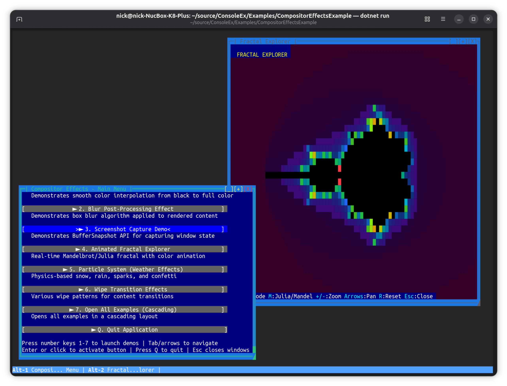

SharpConsoleUI
A terminal GUI framework for .NET.
Per-cell alpha blending, double-buffered compositing with occlusion culling, and a Measure→Arrange→Paint layout pipeline. Each window runs on its own async thread. Gradient backgrounds propagate through every transparent control automatically.


Watch SharpConsoleUI in action on YouTube


Real Compositor
Gradient backgrounds propagate through every transparent control automatically —
DataGrids, containers, margins, all transparent to the compositor beneath.
No control needs to know the gradient exists.
Per-cell alpha blending on foreground and background: write
[#00FF0080]50% alpha[/] in any label, on any control,
and the compositor handles the rest.

Async Windows
Each window runs on its own async thread and updates independently. Multiple panels animate simultaneously without blocking each other. No timer juggling — just async/await and CancellationToken.

Raw Buffer Access
PreBufferPaint and PostBufferPaint give you full Cell[,] access before and after
every render pass. Animated fractals, plasma effects, blur, color grading —
anything that operates directly on the cell buffer.
Controls paint on top of whatever PreBufferPaint puts down.

Full Unicode
CJK wide characters, surrogate pair emoji, RTL scripts, regional indicator flags — correct at the cell level throughout the compositor, diff renderer, and ANSI output. Width-aware everywhere, not an afterthought.

Unique Controls
PTY-backed terminal emulator: run a real shell — bash, vim, btop — inside a UI panel with character-perfect ANSI capture. ImageControl renders PNG, JPEG, WebP via half-block Unicode. CanvasControl with 30+ drawing primitives. SpectreRenderableControl wraps any Spectre.Console IRenderable natively.

Markup Everywhere
Write [red]alert[/] in any string, on any control, without a second thought.
Named colors, RGB, full RGBA hex ([#FF000080]50% alpha[/]),
bold, italic, underline, background colors, nested styles —
composited through the alpha pipeline just like everything else.
What only SharpConsoleUI does

-
Gradient compositor
Window gradients propagate through every transparent control automatically. DataGrids, containers, margins — all transparent to the compositor beneath. No control needs to know the gradient exists.
-
Full RGBA alpha on foreground and background
Porter-Duff compositing at the cell level. Glass panels. Animated alpha. Pulse effects. Foreground and background independently alpha-composited against whatever the compositor has already rendered.
-
PreBufferPaint and PostBufferPaint
Full Cell[,] access before and after every render pass. Animated backgrounds, blur, color grading, fractals — anything that operates on the raw cell buffer.
-
Per-window async threads
Each window is an async Task. Multiple panels update simultaneously at different rates without coordination. Natural, not engineered.
-
PTY terminal emulator
TerminalControl embeds a real shell process inside a UI panel. Run bash, vim, htop inside your application. Linux only.
-
Image rendering
ImageControl displays PNG, JPEG, WebP and more via half-block Unicode rendering. Fit, Fill, Stretch, None scale modes.
-
Animation pipeline
Time-based tweened animations with easing functions built on PostBufferPaint. FadeIn, FadeOut, SlideIn, custom effects.
-
Spectre.Console bridge
SpectreRenderableControl wraps any IRenderable as a native control. Every Spectre widget works inside SharpConsoleUI windows without modification.
Quick Start
dotnet add package SharpConsoleUIusing SharpConsoleUI;
using SharpConsoleUI.Builders;
using SharpConsoleUI.Configuration;
using SharpConsoleUI.Controls;
using SharpConsoleUI.Helpers;
var windowSystem = new ConsoleWindowSystem(
new NetConsoleDriver(RenderMode.Buffer));
var gradient = ColorGradient.FromColors(
new Color(0, 20, 60),
new Color(0, 5, 20));
var window = new WindowBuilder(windowSystem)
.WithTitle("SharpConsoleUI")
.WithSize(70, 22)
.Centered()
.WithBackgroundGradient(gradient, GradientDirection.Vertical)
.Build();
// PreBufferPaint — fires before controls paint
window.PreBufferPaint += (buffer, dirty, clip) =>
{
// Animated background, fractal, pattern —
// whatever you want beneath the controls
};
// PostBufferPaint — fires after controls paint
window.PostBufferPaint += (buffer, dirty, clip) =>
{
// Color grade, blur, overlay effects
};
// Controls inherit the gradient — no background needed
window.AddControl(new MarkupControl(new List<string>
{
"[bold cyan]Real compositor. Full alpha blending.[/]",
"[dim]The terminal is just the output surface.[/]",
"",
// Alpha on foreground: #RRGGBBAA — 50% alpha red
"[#FF000080]This text has 50% alpha foreground[/]",
"Controls are transparent to the gradient beneath."
}));
windowSystem.AddWindow(window);
windowSystem.Run();